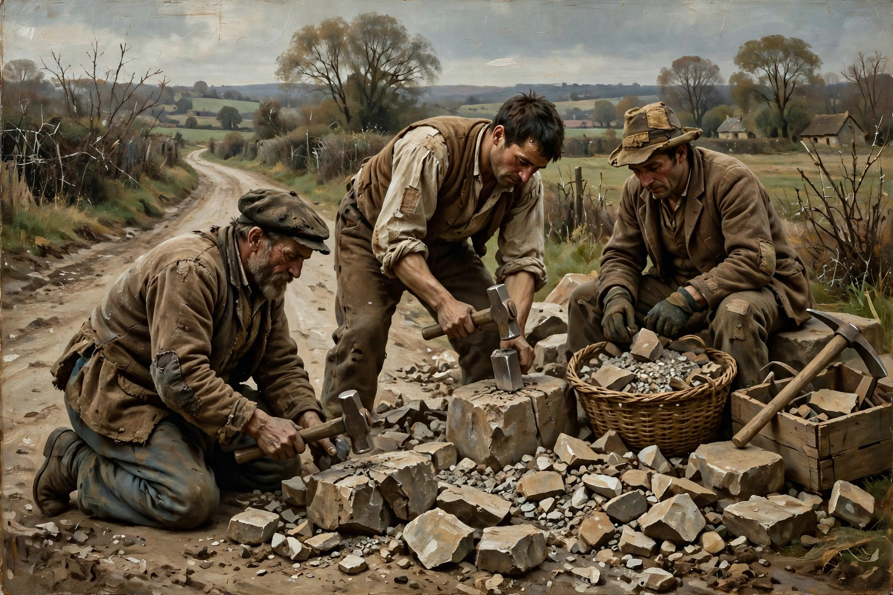

Realism in the arts is the attempt to represent subject matter truthfully, without artificiality, idealisation or supernatural elements. As a movement it emerged in France in the 1840s–1850s, after the Revolution of 1848, rejecting the exoticism of Romanticism and the grandeur of academic history painting in favour of contemporary, ordinary life.

Gustave Courbet was the movement's champion: his The Stone Breakers (1849) and A Burial at Ornans (1849–50) gave monumental scale to peasants and provincial funerals, and in 1855 he staged his own “Pavilion of Realism”. Millet painted rural labour in The Gleaners; Daumier chronicled Parisian life. Realism spread across Europe — Ilya Repin in Russia, the Pre-Raphaelite-influenced painters in Britain, Thomas Eakins in America — and shaped later movements from Naturalism to Social Realism and Socialist Realism.
Literary realism, in Balzac, Flaubert (Madame Bovary, 1857), George Eliot, Tolstoy and Dostoevsky, sought faithful depiction of everyday experience and social conditions, with detailed description and psychologically credible characters, in reaction against Romantic sentimentality.
Realism's insistence that art engage the contemporary world paved the way for Impressionism and modern art, and its name has been reused for later styles including photorealism and kitchen-sink realism in theatre and film.
Recreated from memory.